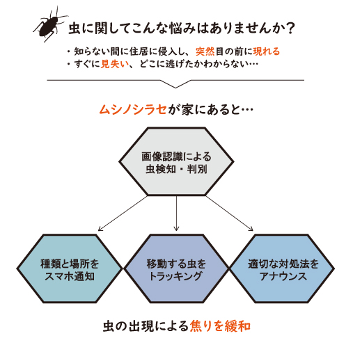
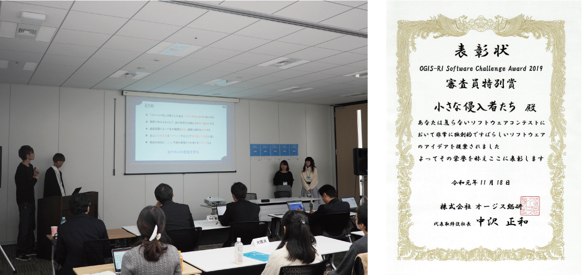
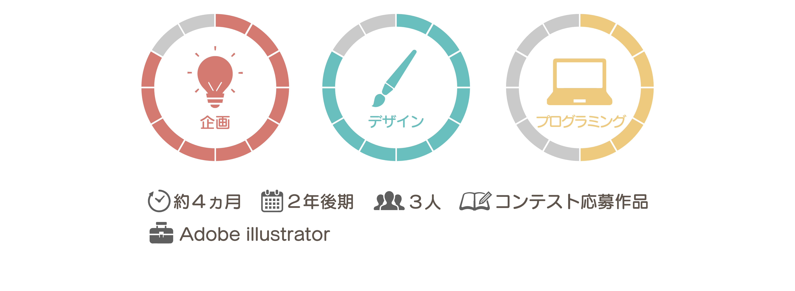

momo'sPortfolio
作品一覧
卒業研究
プロフィール
虫の出現に焦らず対処”ムシノシラセ”
オージス総研主催「焦らないソフトウェアコンテスト」応募作品

「焦らない」がテーマのソフトウェアアイデアコンテスト。
私たちは虫の出現の焦りに着目し、虫の出現を検出・対処法を知らせるソフトウェアを提案しました。

企画書審査を通過後、東京で行われた本戦に出場しプレゼンテーションを行いました。
また本戦では簡易版アプリを作成しデモンストレーションを実施。見事審査員特別賞を頂くことができました。
焦らないソフトウェアコンテスト本戦レポートページへ
